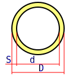

D - диаметр круга
c=d/D

D - диаметр кольца наружный
d - диаметр кольца внутренний
S - толщина стенки
Wp = 2 × Wx
D - диаметр круга
c=d/D
D - диаметр кольца наружный
d - диаметр кольца внутренний
S - толщина стенки
| Осевые моменты сопротивления Wx | ||
|---|---|---|
| Форма сечения | Расчетная формула | Эскиз и условные обозначения |
| Круг | Wx=Π×D3/32 |  D - диаметр круга |
| Кольцо | Wx=(Π×D3/32)(1-c4) c=d/D |
D - диаметр кольца наружный d - диаметр кольца внутренний S - толщина стенки |
| Полярные моменты сопротивления Wp | ||
| Форма сечения | Расчетная формула | Эскиз и условные обозначения |
| Круг | Wp=Π×D3/16 Wp = 2 × Wx |
D - диаметр круга |
| Кольцо | Wp=(Π×D3/16)(1-c4) c=d/D |
D - диаметр кольца наружный d - диаметр кольца внутренний S - толщина стенки |
Pol Banky © 2018